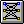
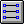
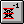
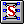
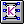
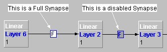

Synapses
    
These components allow the user to choose the type of synapse that
connects two layers.
In the toolbar there are several buttons shown above, representing
two main types of synpase, these are supervised synapses and
unsupervised synapses.
Note : Users should not mix, unsupervised and supervised network
elements. Doing so will result in unspecified behaviour and your
network will be useless. On the other hand you may first train an
unsupervised network and embed it into the start of supervised i.e
behind the supervised components. You can do this by exporting the
unsupervised network after training and loading it into a Nested ANN
component. This component must be placed before any supervised
components i.e immediately after the input synapse.
Supervised Synapses
- A
Full Synapse will connect every output connection of one layer to this
input of every neuron in another layer.
-
A Direct Synapse will connect each output connection of one layer to
exactly one neuron in the other layer. The number of outputs of the
first layer must match the number of neurons in the second layer, or an
exception will be generated.
-
A Delayed Synapse behaves as a full Synapse where each connection is
implemented with a FIRFilter object. In this connection is implemented
the temporal backpropagation algorithm by Eric A. Wan, as in 'Time
Series Prediction by Using a Connectionist Network with Internal Delay
Lines ' in Time Series Prediction. Forecasting the Future and
Understanding the Past, by A.Weigend and N.Gershenfeld. Addison-Wesley,
1994.
Unsupervised Synapses
-
A Sanger Synapse to build unsupervised neural networks that apply the
PCA (Principal Component Analysis) algorithm. Using this synapse along
with the Nested Neural Network component is very easy to build modular
neural networks where the first NN acts as a pre-processing element
that reduces the number of the input columns and its noise.
-
A Kohonen synapse is used along with a SOM type layer (e.g Winner Takes
All or Gaussian Layer) to characterise data. For example this synapse
could be used to determine whether an image is showing a character 'A'
or 'B' as explained in the Joone Image Recognition tutorial. It is
important that this component is only connected to a SOM layer, failure
to do so will result in unspecified behaviour. Effectively this
synapse implements the weights of a SOM network and the SOM layers
implement the SOM learning strategy.
To use these components, the firstly selects the tool button
corresponding to the synapse required, then drag a line from one layer
to another in the drawing area. The newly inserted synapse will be
shown with an arrow containing a small box at its centre, as in the
following figure:

The box contains a label indicating the type and state of the synapse.
The available types are shown the following table:
F = Full Synapse
D = Direct Synapse
-1 = Delayed Synapse
S = Sanger PCA Synapse
K = Kohonen Synapse
If the little box is greyed, then the synapse is disabled, indicating
that this branch of the net is interrupted. To disable a synapse,
right-click it and set the 'Enabled' property in the property panel to
false. This feature is very useful in the designing of a neural network
to try several architectures on the fly.